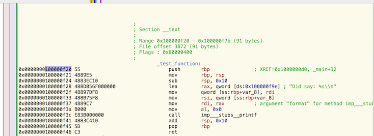

Stranger in a strange land
I’m not primarily a front-end dev so getting everything setup and configured for web development is particularly frustrating for me and most blog posts, tutorials don’t actually give explanations, just copy-pasting blindly tons of little configs.
Here’s my post that I’m using as reference for me and hopefully for any other non-frontend developer that wants to use the latest and greatest JavaScript like fetch, async, await, React, JSX.
Getting started, compiling JavaScript to …JavaScript
Because of fragmentation in implementations of the latest JavaScript features, we’ll use babel to compile our JavaScript using the latest features to JavaScript that will work in Chrome, Firefox and Safari.
babel has a concept of plugins. These are like features that you can turn on during the compilation steps and are pretty granular. Often you’ll want a whole bunch of plugins together and that is so common enough that babel has something called presets. You can put that in separate .babelrc file, but I prefer not having so much silly little config files, so you can also put it in your package.json; example:
"babel": {
"presets": [
"react",
"es2015",
"stage-3"
],
"plugins": [
"transform-es2015-modules-commonjs",
"transform-async-to-generator",
"transform-runtime"
]
}
These are the ones I’m using to compile JSX, use ES6 modules, and async, await.
So when you invoke babel, it will look at the package.json, see the babel field and turn on those features, so an example invocation is:
$ babel lib --out-dir dist
which will compile all the code in the lib directory and output the results in the dist directory. This process is the same for node.
Bundling code
Now we have our legal JavaScript for today’s browsers/node. We can bundle up everything as a single JavaScript file using webpack. I previously used browserify but like all things web, apparently its not hot anymore. We can invoke it like so:
$ webpack --progress --colors dist/homepage.js bundle.js
where bundle.js is the name of the single output file that we’ll get. You can apparently do some kind of config file for webpack, yet another config file, but this is enough for me right now.
Actual code/project with JSX
So let’s say we have these two files, one is homepage.jsx and the other is button.jsx. Note that I use a real example of async, await, for a great explanation see here, for OCaml programmers, await is basically >>= or let%lwt.
This is button.jsx
'use strict';
import React from 'react';
class Button extends React.Component {
async do_request(e) {
let query =
'https://api.bitcoinaverage.com' +
'/ticker/global/USD';
let nonsense = "https://foo.bar";
try {
let pulled = await fetch(query);
let body = await pulled.json();
console.log(body);
await fetch(nonsense);
} catch (e) {
console.log("Exception raised:", e);
console.log('Logic continued');
}
}
render () {
let s = {color:'red'};
return (
<p style={s}
onClick={this.do_request.bind(this)}>
Click Me
</p>
);
}
};
// Remember to put wrap in {}
export {Button};
and homepage.jsx
'use strict';
import React from 'react';
import ReactDOM from 'react-dom';
// REMEMBER to do {} since button.jsx doesn't do
// export default
import {Button} from './button';
class Page extends React.Component {
render () {
return (
<div>
Hello World
<Button/>
</div>
);
}
};
ReactDOM.render(<Page/>,
document.getElementById('cont'));
So all this will be compiled correctly and turned into one bundle.js which we can use in this index.html
<!DOCTYPE html>
<meta charset="utf-8">
<body>
<div id="cont"></div>
<script src="bundle.js"></script>
</body>
and when we click the button we see this in the Chrome dev tools:
Object {24h_avg: 614.98, ask: 613.72, bid: 613.05, last: 613.56, timestamp: "Tue, 20 Sep 2016 20:09:30 -0000"…}
bundle.js:23085 GET https://foo.bar/ net::ERR_NAME_NOT_RESOLVED_callee$ @ bundle.js:23085tryCatch @ bundle.js:23242invoke @ bundle.js:23516prototype.(anonymous function) @ bundle.js:23275step @ bundle.js:23872(anonymous function) @ bundle.js:23883
bundle.js:23095 Exception raised: TypeError: Failed to fetch(…)
bundle.js:23096 Logic continued
Yay, things worked.
See the repo here for the full package.json
If you like this and other posts of mine, then reach out to me at edgar.factorial@gmail.com, I’m looking for remote contract work.
Let’s say we have a C binary given to us and there’s a C function in it that we want to call. For example, say we have this code, assume it is called inject_me.c:
#include <stdio.h>
int test_function(char *some_word)
{
return printf("Did say: %s\n", some_word);
}
int main (int argc, char **argv)
{
return test_function("Hello World");
}
and we want to call the function test_function by ourselves. To do that we need to find the location of the function in the binary. We can do that by disassembling the binary, I used to use command line tools for that but now I’m using hopper. (Hopper is an AMAZING program). Once we disassemble it, we find the function in memory:

Notice that I highlighted the actual location of: 0x100000f20. Now we can inject it with this code, assume it is called inject.c
#include <stdio.h>
#include <string.h>
#include <mach-o/dyld.h>
#define SPOT 0x100000f20
typedef int pull_it(char *);
static pull_it *pulled = NULL;
__attribute__((constructor))
void example_injection()
{
char path[1024];
uint32_t size = sizeof(path);
_NSGetExecutablePath(path, &size);
for (uint32_t i = 0; i < _dyld_image_count(); i++) {
if (strcmp(_dyld_get_image_name(i), path) == 0) {
intptr_t slide = _dyld_get_image_vmaddr_slide(i);
pulled = (pull_it*)(intptr_t)(slide + SPOT);
printf("slide: %lu\n", slide);
pulled("Please work\n");
}
}
printf("This ran before the actual program\n");
}
The __attribute__((constructor)) calls the wrapped function before main goes off.
The slide is needed because: (I found this on some Apple mailing list and don’t remember from where anymore)
Q: Can someone enlighten me as to what the virtual memory slide amount
is ? (this parameter is returned by _dyld_get_image_vmaddr_slide for
instance)
A: The shared libraries are prebound to an initial base address but
when the shared library gets loaded dyld can "slide" the library to a
new base address, this is where the virtual memory slide comes from.
Build both with this Makefile
osx_clang := $(shell xcrun --sdk macosx --find clang)
osx_sdk := $(shell xcrun --sdk macosx --show-sdk-path)
c_flags := -std=c11
inject_me:inject_me.c
@${osx_clang} -isysroot ${osx_sdk} ${c_flags} $< -o $@
code_injection:inject_me
@${osx_clang} -isysroot ${osx_sdk} ${c_flags} inject.c -dynamiclib -o $@.dylib
Now we can invoke it like so:
$ make code_injection
$ DYLD_INSERT_LIBRARIES=code_injection.dylib ./inject_me
slide: 125042688
Did say: Please work
This ran before the actual program
Did say: Hello World
Yay, it works. BTW, this works for jailbroken iOS as well.
OCaml tree examples tend to be defined with algebraic data types and tend to be functional examples. Here are two imperative tree traversals, a pre-order and in-order. I’m still trying to work out a nice post-order imperative solution in OCaml so if you have one then please tweet it at me: @edgararout
EDIT: I’ve added a zigzag function procedure as well. This question came up recently at an interview and I messed it up. The point is to print the tree in a zigzag pattern.
type 'a node = {mutable data: 'a;
mutable left : 'a node option;
mutable right: 'a node option; }
let new_node data = {data; left = None; right = None;}
let insert tree new_data =
let module Wrapper = struct exception Stop_loop end in
let iter = ref tree in
try
while true do
if new_data < !iter.data
then match !iter.left with
| None ->
!iter.left <- Some (new_node new_data);
raise Wrapper.Stop_loop
| Some left_tree -> iter := left_tree
else if new_data > !iter.data
then match !iter.right with
| None ->
!iter.right <- Some (new_node new_data);
raise Wrapper.Stop_loop
| Some right_tree -> iter := right_tree
done
with Wrapper.Stop_loop -> ()
let pre_order_traversal tree =
let s = Stack.create () in
Stack.push tree s;
while not (Stack.is_empty s) do
let iter_node = Stack.pop s in
Printf.sprintf "%s " iter_node.data
|> print_string;
(match iter_node.right with
None -> ()
| Some right -> Stack.push right s);
(match iter_node.left with
None -> ()
| Some left -> Stack.push left s)
done
let in_order_traversal tree =
let module W = struct exception Stop_loop end in
let visited_stack = Stack.create () in
let iter_node = ref (Some tree) in
try while true do
(* Inner loop, we keep trying to go left *)
(try while true do
match !iter_node with
| None -> raise W.Stop_loop
| Some left ->
Stack.push left visited_stack;
iter_node := left.left
done;
with W.Stop_loop -> ());
(* If we have no more to process in the stack, then we're
done *)
if Stack.length visited_stack = 0
then raise W.Stop_loop
else
(* Here we're forced to start moving rightward *)
let temp = Stack.pop visited_stack in
Printf.sprintf "%s " temp.data |> print_string;
iter_node := temp.right
done
with W.Stop_loop -> ()
let print_spiral root =
let (current, next) = Stack.(ref (create ()), ref (create ())) in
let left_to_right = ref true in
let swap a b = let (a_, b_) = !a, !b in a := b_; b := a_ in
Stack.push root !current;
while not (Stack.is_empty !current) do
let r = Stack.top !current in
Stack.pop !current |> ignore;
Printf.sprintf "%s " r.data |> print_string;
if !left_to_right then
begin
(match r.left with None -> () | Some l -> Stack.push l !next);
(match r.right with None -> () | Some r -> Stack.push r !next)
end
else begin
(match r.right with None -> () | Some r -> Stack.push r !next);
(match r.left with None -> () | Some l -> Stack.push l !next)
end;
if Stack.length !current = 0
then (left_to_right := not !left_to_right; swap current next)
done
let () =
let root = new_node "F" in
["B";"G";"A";"D";"I";"C";"E";"H"] |> List.iter (insert root);
pre_order_traversal root;
print_newline ();
in_order_traversal root
print_newline ();
print_spiral root
This post is mainly aimed at intermediate level users of js_of_ocaml, the OCaml to JavaScript compiler and at improving the sad state of documentation for js_of_ocaml. (Plus I’m interviewing for jobs, hire me!, and wanted to use both OCaml, JavaScript while preparing for interviews)
OCaml typing of JavaScript (Uses PPX)
Say we want to express some algorithms in OCaml but using JavaScript as the runtime execution language/environment. Let’s start with our main data structure, a tree node.
function TreeNode(value) {
this.value = value;
this.left = this.right = null;
}
Our OCaml version will be:
class type ['data] tree_node = object
method value : 'data Js.prop
method left : 'data tree_node Js.t Js.prop
method right : 'data tree_node Js.t Js.prop
end
Note that there is a small thing about typing the nullability of the left, right fields, I will return to this at the end of the blog post and it was done for convenience.
So explanations:
- We are creating a
class type, this just describes the object, how we describe it is key.
- The
'data is a type variable and lets us use any kind of type for the value in this node.
- OCaml objects only expose methods to the outside world, so properties need
Js.prop, this lets us read and write to this field. We can control it to be read only by instead using Js.readonly_prop or even write only with Js.writeonly_prop.
- Methods
left, right are also properties. Read the signature from right to left, aka left is a JavaScript read or write property which has a JavaScript object typed as tree_node and parameterized with the 'data type variable. Aka tree_nodes of string or int or whatever the type of 'data is.
Now we need to provide a way to make this object.
let __hidden__ =
Js.Unsafe.pure_js_expr "function TreeNode(value) {\
this.value = value; \
this.left = this.right = null;}"
This is the JavaScript we’ll be using, essentially. Do note that the field names match up, this is important. Now we provide a constructor function:
let node : ('data -> 'data tree_node Js.t) Js.constr = __hidden__
This node constructor says that its a special JavaScript constructor that will invoke __hidden__ with new and such that it expects one argument. An example is:
let root = new%js node "Hello"
We can also make specialized constructors,
let node_from_int : (int -> int tree_node Js.t) Js.constr = __hidden__
and a simple usage:
let () =
let root = new%js node "Hello" in
root##.left := new%js node "Left side";
root##.left##.left := new%js node "Grand Kid";
(* Note that this just prints the raw object representation of the
field value *)
Firebug.console##log root##.left##.left##.value;
(* This shows the value as expected *)
print_endline root##.left##.left##.value
You can compile and run it on node with: (Assuming file name is trees_in_js.ml)
$ ocamlfind ocamlc -package js_of_ocaml.ppx -linkpkg trees_in_js.ml
$ js_of_ocaml a.out -o T.js
$ node T.js
And you should get something like the following printed out:
h { t: 0, c: 'Grand Kid', l: 9 }
Grand Kid
Depth First Search, Level order traversal complete examples
Now here’s an example of a preorder depth first search and level order traversal.
class type ['data] tree_node = object
method value : 'data Js.prop
method left : 'data tree_node Js.t Js.prop
method right : 'data tree_node Js.t Js.prop
end
let node : ('data -> 'data tree_node Js.t) Js.constr = __hidden__
let depth_first_search starting_node =
let stack = Stack.create () in
Stack.push starting_node stack;
while not (Stack.is_empty stack) do
let iter_node = Stack.pop stack in
Printf.sprintf "%s " iter_node##.value
|> print_string;
if Js.Opt.return iter_node##.right |> Js.Opt.test
then Stack.push iter_node##.right stack;
if Js.Opt.return iter_node##.left |> Js.Opt.test
then Stack.push iter_node##.left stack
done
let level_order starting_node =
let q = Queue.create () in
Queue.add starting_node q;
while not (Queue.is_empty q) do
let pop = Queue.pop q in
Printf.sprintf "%s " pop##.value
|> print_string;
if Js.Opt.(return pop##.left |> test)
then Queue.push pop##.left q;
if Js.Opt.(return pop##.right |> test)
then Queue.push pop##.right q
done
let () =
let root = new%js node "F" in
root##.left := new%js node "B";
root##.right := new%js node "G";
root##.right##.right := new%js node "I";
root##.left##.left := new%js node "A";
root##.left##.right := new%js node "D";
root##.left##.right##.left := new%js node "C";
root##.left##.right##.right := new%js node "E";
root##.right##.right##.left := new%js node "H";
depth_first_search root |> print_newline;
level_order root |> print_newline
and compile it just like given earlier in the blog post. Shameless plug, you can also turn it into an executable with a feature I added to the js_of_ocaml compiler,
$ ocamlfind ocamlc -package js_of_ocaml.ppx -linkpkg trees_in_js.ml
$ js_of_ocaml --custom-header='#!/usr/bin/env node' a.out -o T.js
$ chmod +x T.js
$ /T.js
Yay, we used the resources of two programming languages standard libaries in one program!
Now we can return to why the typing of the class type matters. The fully correct typing of tree_node is:
class type ['data] tree_node = object
method value : 'data Js.prop
method left : 'data tree_node Js.t Js.Opt.t Js.prop
method right : 'data tree_node Js.t Js.Opt.t Js.prop
end
Notice the addition of Js.Opt.t. Since the left, right are nullable, we should capture that in the OCaml API, this however does force us to use Js.Opt and so we’d have to do things like:
root##.left := new%js node "Left side" |> Js.Opt.return;
When trying to set the field, etc. But since we didn’t expose that nullability of the field in the type signature, the depth_first_search code needs to check if the field is indeed null, which would have been otherwise forced by the type system had we used Js.Opt, aka:
if Js.Opt.return iter_node##.right |> Js.Opt.test
then Stack.push iter_node##.right stack;
These are tradeoffs that you can make in your own usage.
I hope this makes it easier for you to use OCaml, JavaScript together.
This blog post shows you how to use real system threads in OCaml by using Lwt, Lwt_preemptive.
!!Note!!
While this shows system threads being used, only one is will actually be running at any given point in time (Think this akin to Python’s single threadedness, still useful to use threads if bottleneck are IO)
Common complaint about multicore
A common complaint about OCaml is the lack of true parallelism, about the single threadedness of the runtime. This is true but its not like OCaml programmers don’t have solutions some solutions. Here’s an easy example that you can instantly use in your coding.
Setup
First we will need some way to verify that our system threads are actually working, we’ll use some math equation to purposefully cause CPU load. Here’s the Sieve Of Eratosthenes Algorithm that I copied from here.
open List
type integer = Int of int
let number_two = Int(2)
let number_zero = Int(0)
let is_less_than_two (Int n) = n < 2
let incr (Int n) = Int(n + 1)
let decr (Int n) = Int(n - 1)
let is_number_zero (Int n) = n = 0
let iota n =
let rec loop curr counter =
if is_less_than_two counter then []
else curr::(loop (incr curr) (decr counter))
in
loop number_two n
let sieve lst =
let rec choose_pivot = function
| [] -> []
| car::cdr when is_number_zero car ->
car::(choose_pivot cdr)
| car::cdr ->
car::(choose_pivot (do_sieve car (decr car) cdr))
and do_sieve step current lst =
match lst with
| [] -> []
| car::cdr ->
if is_number_zero current
then number_zero::(do_sieve step (decr step) cdr)
else car::(do_sieve step (decr current) cdr)
in
choose_pivot lst
let is_prime n =
match rev (sieve (iota n)) with
x::_ -> not (is_number_zero x)
Now our Lwt, Lwt_preemptive code:
open Lwt.Infix
let do_example port =
let address = Unix.(ADDR_INET (inet_addr_loopback, port)) in
Lwt_io.establish_server address (fun (tcp_in, tcp_out) ->
() |> Lwt_preemptive.detach (fun () ->
while true do
ignore (is_prime (Int port))
done
)
|> Lwt.ignore_result
)
|> ignore |> Lwt.return
let () =
let rec forever () = fst (Lwt.wait ()) >>= forever in
Lwt_preemptive.init 5 10 ignore;
([2000; 2001; 2002; 2003; 2004]
|> Lwt_list.iter_p do_example >>= forever)
|> Lwt_main.run
The code that runs inside the callback to Lwt_io.establish_server uses Lwt_preemptive.detach, this creates a new system thread whenever there is something that connects on ports [2000; 2001; 2002; 2003; 2004]. You don’t have to call Lwt_preemptive.init since detach will do it anyway, but I am doing it to ensure that at least 5 threads are made with 10 being the max.
We compile it with:
$ ocamlfind ocamlopt -thread -package lwt.unix,lwt.preemptive test_case.ml -linkpkg -o TEST_CASE
And we test it by starting up ./TEST_CASE, opening htop and finding TEST_CASE (hit t in htop to see a tree based process view) and running socat STDIN TCP:localhost:<some_port>, where <some_port> is a number in our list of ports (remember [2000; 2001; 2002; 2003; 2004]).
Thus we see in htop the CPU % utilization move for each of the threads of TEST_CASE.
Success! Real system threads.